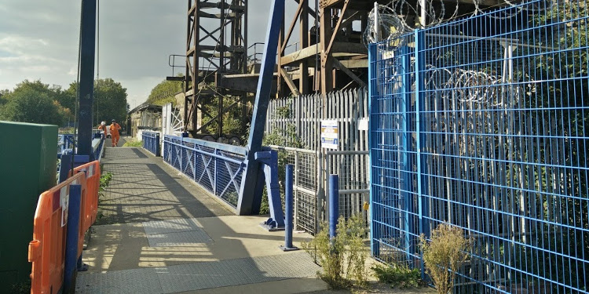

Introduction
There was famously a wooden bridge at this crossing point which charged a toll until it was closed in 1920’s after falling into disrepair.
It’s modern replacement is a steel lifting mechanism opened in 2002, which continues to allow access for boats that occasionally make their way up and down the creek. A long local campaign and collaboration from all sectors of the local community succeeded in getting it designed and built. One of it’s key protagonists Pete Pope died in 2012 and his ashes were scattered into the creek from here in noisy celebration..When the bridge was lifted recently to release the Aileen Claire fishing boat there was a bit of a surprise for those who had made a home under the structure as their secret homes were exposed.
Please post your story or questions to hapennyhatch@deptfordcreek.net.